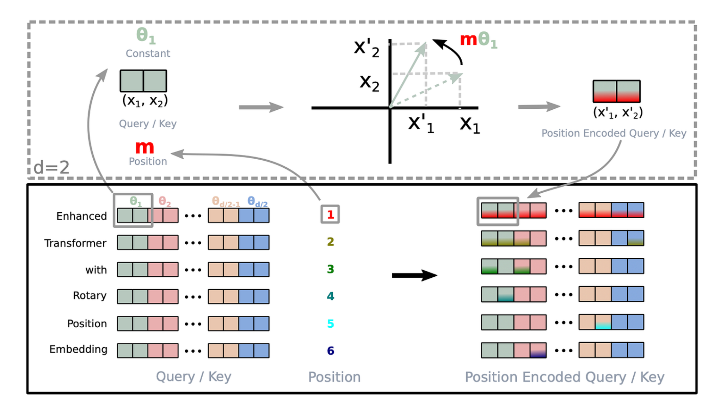

RoPE：旋转位置编码
Transformer 的自注意力机制并行处理整个序列，矩阵乘法本身是位置无关的——打乱输入顺序，输出也只是相应打乱。为了让模型理解"谁在前、谁在后"，必须注入位置信息。
位置编码的演进
| Text Only |
|---|
| 绝对位置编码 (GPT-1/2) → 学习固定位置向量，直接加到 embedding
正弦位置编码 (Transformer) → 用 sin/cos 生成位置向量，加到 embedding
相对位置编码 (T5, ALiBi) → 在 attention 分数上加偏置
RoPE (LLaMA, Qwen, ...) → 旋转 Q 和 K 向量 ← 现代主流
|
绝对位置编码的痛点：模型难以泛化到训练时没见过的长度；相对位置关系只能靠模型从绝对编码中"悟出来"。
RoPE 的思路：把位置信息"旋转"进 Q 和 K 向量中，使得两个位置的向量点积天然包含它们的相对距离。

数学原理：二维旋转
旋转矩阵
二维空间中，绕原点旋转 \(\theta\) 的旋转矩阵是：
\[
R(\theta) = \begin{bmatrix} \cos\theta & -\sin\theta \\ \sin\theta & \cos\theta \end{bmatrix}
\]
对向量 \(x = \begin{bmatrix} x_0 \\ x_1 \end{bmatrix}\) 施加旋转：
\[
R(\theta) \cdot x = \begin{bmatrix} x_0\cos\theta - x_1\sin\theta \\ x_0\sin\theta + x_1\cos\theta \end{bmatrix}
\]
用复数理解
旋转等价于乘以 \(e^{i\theta}\)：
\[
(x_0 + i \cdot x_1) \cdot e^{i\theta} = (x_0 + i \cdot x_1) \cdot (\cos\theta + i \cdot \sin\theta)
\]
展开后实部和虚部分别对应旋转后的两个坐标，与矩阵形式完全一样。
为什么旋转能编码相对位置
旋转矩阵有一个关键性质——正交性：
\[
R(\theta_1)^\top \cdot R(\theta_2) = R(\theta_2 - \theta_1)
\]
现在，给位置 \(m\) 的 query 向量施加旋转 \(R(m\theta)\)，给位置 \(n\) 的 key 向量施加旋转 \(R(n\theta)\)：
\[
\begin{aligned}
Q_m \cdot K_n &= (R(m\theta) \cdot q)^\top \cdot (R(n\theta) \cdot k) \\
&= q^\top \cdot R(m\theta)^\top \cdot R(n\theta) \cdot k \\
&= q^\top \cdot R((n-m)\theta) \cdot k
\end{aligned}
\]
点积结果只依赖于相对距离 \((n-m)\)，与绝对位置 \(m\)、\(n\) 无关。RoPE 通过旋转把相对位置直接"写进"了 attention score 里。
推广到高维
一个 \(d\) 维向量，按相邻两两分组为 \(d/2\) 个二维子空间，各自独立旋转。每个子空间有自己的旋转频率 \(\omega_i\)，位置 \(pos\) 处该子空间的旋转角度为 \(pos \cdot \omega_i\)。
\[
R_{pos} = \begin{bmatrix}
\cos(pos\cdot\omega_0) & -\sin(pos\cdot\omega_0) & & & \\
\sin(pos\cdot\omega_0) & \cos(pos\cdot\omega_0) & & & \\
& & \cos(pos\cdot\omega_1) & -\sin(pos\cdot\omega_1) & \\
& & \sin(pos\cdot\omega_1) & \cos(pos\cdot\omega_1) & \\
& & & & \ddots \\
\end{bmatrix}
\]
复数视角下，第 \(i\) 对维度就是乘以 \(e^{i \cdot pos \cdot \omega_i}\)，内积为：
\[
\langle q_i', k_i' \rangle = \text{Re}\left[ q_i \cdot \bar{k}_i \cdot e^{i(m-n)\omega_i} \right]
\]
旋转因子 \(e^{i(m-n)\omega_i}\) 只包含相对位置 \((m-n)\)。
下面按计算流程，一步一步推导 RoPE 是如何实现的。
Step 1：计算每个维度对的旋转频率 inv_freq
RoPE 的第一步是为 Q/K 向量的每个维度对分配一个旋转频率。
以 head_dim=128 为例，把 128 维向量分成 64 对，每对使用不同的频率：
| Text Only |
|---|
| θ₀ = 1 / base^(0/128) → 频率最高，旋转最快（捕捉近距离关系）
θ₁ = 1 / base^(2/128) →
θ₂ = 1 / base^(4/128) →
...
θ₆₃ = 1 / base^(126/128) → 频率最低，旋转最慢（捕捉远距离关系）
|
| Python |
|---|
| # inv_freq 形状: (head_dim / 2,) = (64,)
inv_freq = 1.0 / (base ** (torch.arange(0, head_dim, 2).float() / head_dim))
# [0, 2, 4, ..., 126] / 128
# 结果: [1.0, 0.93, 0.87, ..., 0.00001] ← 从高频到低频
|
其中 base 通常是 10000（原始 Transformer）或 1000000（Qwen3 长上下文）。base 越大，低频成分变化越慢，能编码的最大距离越远。
直觉：类似钟表——秒针转得快（高频，感知短间隔），时针转得慢（低频，感知长间隔）。64 个频率组合在一起，可以精确编码任意距离。
Step 2：乘以位置 ID，得到每个位置的旋转角度
将频率向量与位置索引 [0, 1, 2, ..., seq_len-1] 做外积，得到每个位置在每个维度对上的旋转角度：
| Text Only |
|---|
| inv_freq (64 个频率)
θ₀ θ₁ θ₂ ... θ₆₃
位置 0: 0·θ₀ 0·θ₁ 0·θ₂ ... 0·θ₆₃ ← 不旋转
位置 1: 1·θ₀ 1·θ₁ 1·θ₂ ... 1·θ₆₃ ← 旋转一点
位置 2: 2·θ₀ 2·θ₁ 2·θ₂ ... 2·θ₆₃ ← 旋转更多
...
位置 m: m·θ₀ m·θ₁ m·θ₂ ... m·θ₆₃
|
| Python |
|---|
| t = torch.arange(seq_len, dtype=torch.float32) # [0, 1, 2, ..., seq_len-1]
freqs = torch.outer(t, inv_freq)
# freqs[m, i] = m × θ_i 表示位置 m 在第 i 个维度对上的旋转角度
|
旋转角度 = 位置 × 频率。同一个位置，不同维度对转的角度不同；同一个维度对，不同位置转的角度也不同。
Step 3：计算 cos 和 sin 值
将角度矩阵沿最后一维复制一份（匹配完整的 head_dim），然后计算 cos 和 sin：
| Python |
|---|
| # 复制以匹配 head_dim: (seq_len, head_dim/2) → (seq_len, head_dim)
emb = torch.cat((freqs, freqs), dim=-1)
# 计算 cos/sin: (seq_len, head_dim)
cos = emb.cos() # cos(m·θ_i)
sin = emb.sin() # sin(m·θ_i)
|
为什么要 cat 复制？ 因为每对两个维度共享同一个频率。head_dim=128 分成 64 对，每对 (x₀, x₁) 用同一个 θ，所以 cos/sin 需要扩展为 128 维。
Step 4：旋转操作
前面数学原理中推导了 2D 旋转公式：
| Text Only |
|---|
| [cosθ -sinθ] [x₀] [x₀·cosθ - x₁·sinθ]
[sinθ cosθ] × [x₁] = [x₀·sinθ + x₁·cosθ]
|
对于 128 维向量，64 对维度各自独立旋转。
论文描述的是相邻维度配对 (0,1), (2,3), ...，但 PyTorch 实际使用前后半配对——将向量分成前半和后半，配对为 (0,64), (1,65), ...。这样做利用连续内存访问，避免交错索引：
| Python |
|---|
| def rotate_half(x):
"""将前半部分和后半部分交换并取反"""
x1 = x[..., : x.shape[-1] // 2] # 前半: [x₀, x₁, ..., x₆₃]
x2 = x[..., x.shape[-1] // 2 :] # 后半: [x₆₄, x₆₅, ..., x₁₂₇]
return torch.cat((-x2, x1), dim=-1) # [-x₆₄, ..., -x₁₂₇, x₀, ..., x₆₃]
# 旋转公式（等价于矩阵乘法，但更高效）:
x_rotated = x * cos + rotate_half(x) * sin
|
两种配对方式数学上完全等价。
Step 5：应用到 Q 和 K
在 Attention 中，RoPE 只应用于 Q 和 K，不应用于 V：
| Text Only |
|---|
| Q_proj ──► Q ──► 应用 RoPE ──┐
├──► Q·K^T ──► Attention Score ──► ...
K_proj ──► K ──► 应用 RoPE ──┘
V_proj ──► V ──────────────────────────────────────────────► ...
（V 不需要 RoPE）
|
| Python |
|---|
| def apply_rotary_pos_emb(q, k, cos, sin):
"""
q, k: (batch, num_heads, seq_len, head_dim)
cos, sin: (1, 1, seq_len, head_dim)
"""
q_embed = q * cos + rotate_half(q) * sin
k_embed = k * cos + rotate_half(k) * sin
return q_embed, k_embed
|
完整代码
| Python |
|---|
1
2
3
4
5
6
7
8
9
10
11
12
13
14
15
16
17
18
19
20
21
22
23
24
25
26
27
28
29 | class RotaryEmbedding(nn.Module):
def __init__(self, head_dim: int, base: float = 1000000.0):
super().__init__()
# Step 1: 计算旋转频率
inv_freq = 1.0 / (base ** (torch.arange(0, head_dim, 2).float() / head_dim))
self.register_buffer("inv_freq", inv_freq)
def forward(self, position_ids):
# Step 2: 乘以位置 ID → 旋转角度
freqs = torch.outer(position_ids[0].float(), self.inv_freq) # (seq_len, head_dim/2)
# Step 3: 计算 cos/sin
emb = torch.cat((freqs, freqs), dim=-1) # (seq_len, head_dim)
return emb.cos().unsqueeze(0), emb.sin().unsqueeze(0) # (1, seq_len, head_dim)
def rotate_half(x):
"""前后半交换取反"""
x1, x2 = x.chunk(2, dim=-1)
return torch.cat((-x2, x1), dim=-1)
def apply_rotary_pos_emb(q, k, cos, sin):
"""Step 4 & 5: 旋转并应用到 Q 和 K"""
cos = cos.unsqueeze(1) # (1, 1, seq_len, head_dim)
sin = sin.unsqueeze(1)
q_embed = q * cos + rotate_half(q) * sin
k_embed = k * cos + rotate_half(k) * sin
return q_embed, k_embed
|
频率和位置的直观理解
| \(i\)（维度对索引，d=128） |
\(\omega_i\) |
旋转一圈所需长度 |
擅长捕捉 |
| 0（高频） |
\(\approx\) 1.0 |
\(\approx\) 6 tokens |
相邻词的语法关系 |
| 16 |
\(\approx\) 0.32 |
\(\approx\) 20 tokens |
短句内依赖 |
| 32 |
\(\approx\) 0.1 |
\(\approx\) 63 tokens |
段落内依赖 |
| 63（最低频） |
\(\approx\) 10⁻⁴ |
\(\approx\) 6 万 tokens |
长程语义关联 |
同一位置，不同维度对被施加了不同频率的旋转：
- 高频维度：旋转快，对近距离位置变化敏感（细粒度）
- 低频维度：旋转慢，覆盖远距离依赖（粗粒度）
就像秒针和时针以不同速度旋转，多频率组合让一个 token 的不同维度去关注不同尺度的位置关系。
优缺点
优点：
- 天然编码相对位置：点积结果直接体现相对距离，不依赖模型学习
- 外推性好：配合 NTK-Aware Scaling 等方法可大幅扩展上下文窗口
- 计算高效：只需缓存 cos/sin 表，旋转操作是逐元素乘加
- 即插即用：只改变 Q/K 的计算方式，不破坏 attention 结构
缺点：
- 旋转频率由 \(\omega_i = base^{-2i/d}\) 固定决定，低频在极长序列下分辨率不足
- 需要在每次 attention 前对 Q/K 做旋转变换
扩展：NTK-Aware Scaling
当推理长度超过训练长度时，直接外推会失效。NTK-Aware Scaling 不调整位置上限，而是调整频率基底 base：
\[
base' = base \cdot \left(\frac{L'}{L}\right)^{\frac{d}{d-2}}
\]
其中 \(L\) 是训练长度，\(L'\) 是目标推理长度。本质是将高频维度保持不变（它们已经够敏感了），只压缩低频维度去覆盖新增的长程位置。LLaMA、Qwen 等模型广泛使用此方法，无需微调即可将上下文窗口扩展 2-4 倍。
参考